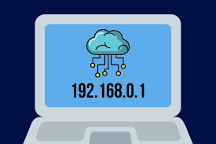

¿Que es una IP?

Funciones principales de una dirección IP
- Identificación única
- Direccionamiento
Analogía con una dirección postal
Piensa en tu dirección IP como la dirección de tu casa.
- Tu casa tiene un número y un nombre de calle únicos.
- Esto permite que el cartero lleve tu correo al lugar correcto.
- Del mismo modo, una dirección IP permite que los datos lleguen al dispositivo correcto en Internet o en tu red.
Tipos de Ip
Según su uso:
IP Privada: Se asignan dentro de una red local (LAN), como la de tu casa, y no son visibles desde internet.
IP Pública: Es la dirección que identifica tu red en internet y es asignada por tu proveedor de servicios de internet (ISP).
Según su asignación
IP Estática: Es una dirección fija y constante que se asigna manualmente y no cambia. Se utiliza para servidores web, de correo o servicios que necesitan una dirección predecible
IP Dinámica: Es una dirección que se asigna temporalmente y cambia de forma automática cada vez que el dispositivo se conecta o reinicia. Es común en redes domésticas y se gestiona a través de un servidor DHCP.
Según la versión del protocolo
IPv4: Es la versión más antigua, con un formato de cuatro números separados por puntos (ej: 192.168.1.1).
IPv6: Es la versión más reciente, diseñada para solucionar la escasez de direcciones IPv4 y utiliza un formato de números hexadecimales separados por dos puntos (ej: 2001:0db8:85a3:0000:0000:8a2e:0370:7334).